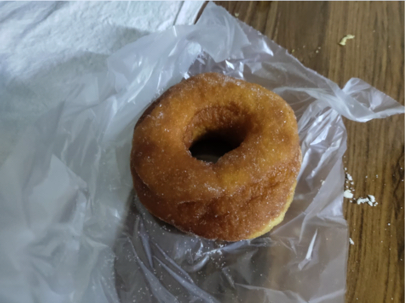
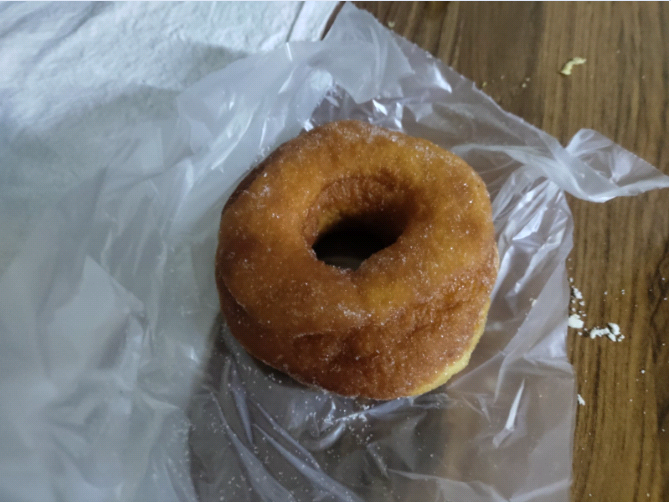
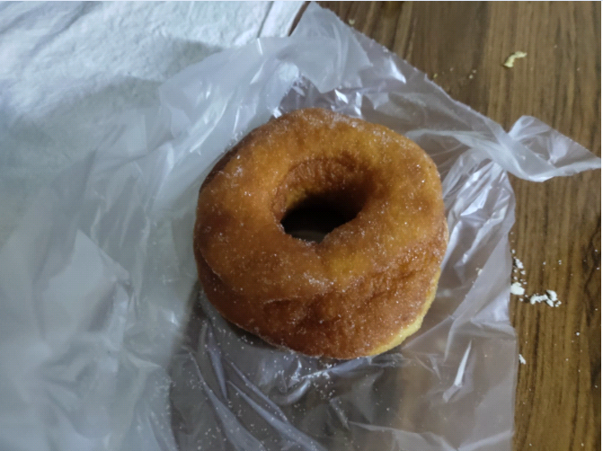

"La receta familiar"
Inicio
Historia
Galeria
Ubicaciones
Contactos
Bienvenido a la panaderia "La receta familiar"
El pan recien salido del horno por la mañana

 "La receta familiar"
"La receta familiar" 
